The CS L@b

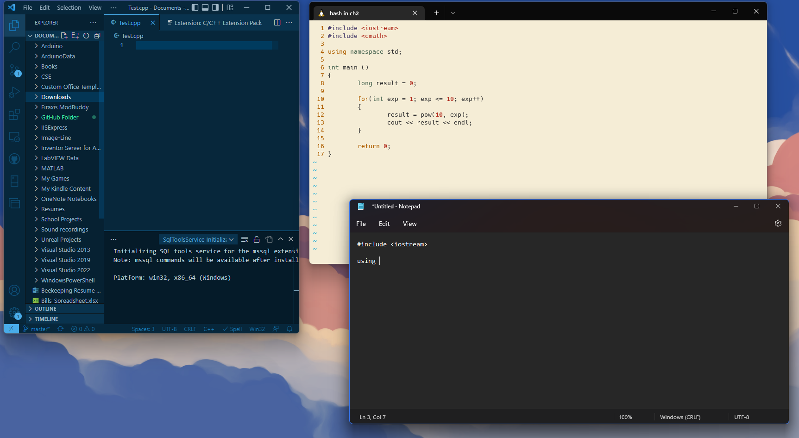 If you already have your environment set up you may skip this section, otherwise keep reading. To write your own code you will need a text editor, which like the name states, is an application that helps the user edit text. Luckily, all operating systems (OS) come with one! For example, Windows has Notepad, MacOS has TextEdit, and Linux usually has Vim. Now I say "usually" since there are multiple distributors that preload the Linux OS with their own choice of editor, but you will most likely encounter Vim, especially if you use Ubuntu. There are also third-party editors that come with extra features. The one I am currently using is Microsoft's Visual Studio Code. Make sure to find the one that is right for you, otherwise you may look at the Intro to Operating Systems lesson to learn how to use Vim. It's great to write your code somewhere, but like all programs, you need a place to run it. That's where the terminal comes in!
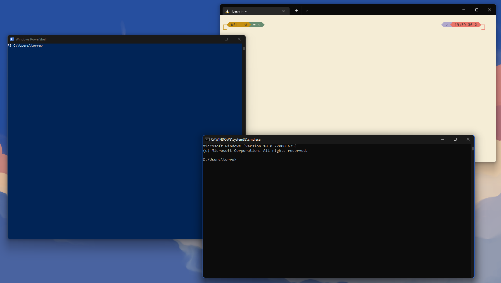 The terminal is a nifty place that is the bridge between you and your computer. It can take user input, run other programs, manage files, display output, and much more. For those who are using the MacOS or the Linux OS, you already have access to the terminal. As for Windows users we have command-line (cmd) and Windows PowerShell. Right now, would be a good time to point out the controversies behind the naming scheme and their definitions. There is a difference between, terminal, shell, and command-line, though they act so similarly that most people often interchange the names. For the sake of uniformity, we will use Linux terminal to write, compile, and run our programs. I highly recommend Window users to follow the installation and configuration guide for WSL (Windows Subsystem for Linux) on Microsoft's website. What WSL does is partition a section of your computer for Linux and is extremely useful. If you don't want to install WSL, you can still use cmd and Notepad to write, compile, and run your code. We are almost close to creating our environment, but we need one more thing.
We have the terminal, now all we need are the tools to interpret our code. A compiler is software that translates our high-level language, in this case C++, into low level language such as Assembly which is machine code. It is easy to install one within the terminal, and I will show you in both the Intro to OS lecture and towards the end of this lecture.
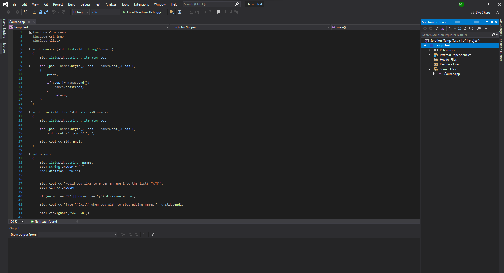 Remember how I said you need an editor and a terminal to write code, well that's not entirely true. There are applications known as integrated development environments (IDE)s that come with the same equipment that editors and terminals have, and then some. Almost all the big ones, like Microsoft's Visual Studio - not to get confused with Microsoft's Visual Studio Code which is just the editor - are free to use but come with a catch. Basically, you can only use them for studying purposes, and can't make a profit unless you buy the business versions, while text editors and terminals are open source (FREE!) and you can do whatever you please. Companies like free, people like free, so it's best to follow the practices.
1 #include <iostream>
2 using namespace std;
3
4 int main()
5 {
6 cout << "Hello World!"\n;
7 return 0;
8 }
C++ is case-sensitive, for example, the key term return is different from the word Return. It also has a free-form layout, so space and line breaks are ignored during compilation. I know what you're thinking, if that's the case why can't I write, for example, "s t d" instead of "std" well the compiler ignores the spaces not the key words. Still, you can write each symbol, keyword, integer, and string - when we mean string we're saying a collection of characters - on their own line and it will still compile like the code above. The code above consist of multiple statements that we will examine.
On line 1 there is the #include directive, which tells the compiler to look at the contents of the iostream file that is within the less-than operator (<) and greater-than operator (>). You will learn more about the file in the string manipulation section. For now, just know that it deals with input and output instructions.
Line 2 tells the compiler to use the default name space to identify terms such as cout which is part of the iostream file. As you will learn, you can override the functionality of key terms in your program by calling a different name space, but since we're learning, we will use the standard.
Let's look at the following statement on line 4, main() is a function for the program. Each function carries out an algorithm - also known as a process - which consist of code. The parenthesis is where we can store parameters - additional instructions for the function to run - though since this is a simple program we can just leave it empty. You will learn more about functions in future sections. The keyword int is called a data type, this specific data type says that the main function can return an integer.
Both lines 5 and 8 help identify where the content of the main function begins and ends. This is one of the many locations where you will put majority of your code in.
To send output to the terminal, you need the term cout, followed by the two less-than-arrows operator <<. The part "Hello World!" is considered a string and is defined by the quotation marks "" surrounding the characters. This helps the compiler distinguish code from plain text it must read. The escape sequence \n is considered one character to the compiler, and it tells the compiler to break and start on a new line in the terminal. The semicolon is like a period and symbolizes the end of a statement.
Remember how I said the main function expects an integer to be returned, well this is it. On line 7 the compiler says to return 0, this means that there were no errors in the program and that it can be terminated. However, if there are errors, the terminal will give you a long list of what seems like random words at first, but it is actually important information for fixing your code.
There are two types of errors in programming, syntax errors and logical errors. The first type is usually easy to fix because the compiler usually catches it for you. This could happen when you accidentally forget the semicolon or forget an operator. Logical errors on the other hand can be a little tricky. It's when the program still runs, but it doesn't do what you ask it to. Compilers can't find these errors, but a debugger can help you go step by step till you find where you went wrong.
You probably want to run your first program right away. That's great, and I want you to keep that ambition, but there are some prerequisites that will make the process easier. Not to say that you can't program right away, humans are smart and can adapt, but it helps when you know the fundamentals. Overall, this section talks about knowing your system, knowing the terminal, and knowing math.
First you must know how to navigate, use, and troubleshoot the computer. If you're a complete beginner when it comes to computers, then I highly recommend getting a book that's for the CompTIA A+ exam. It teaches you about Windows, Linux, and MAC operating systems - basically IT stuff that doesn't involve programming. It also teaches you about the system's hardware and how to troubleshoot. It might take a while to read and comprehend, but it's well worth the time. Nothing is more embarrassing than a Computer Scientist who doesn't know how to update their drivers. Before looking for books, first visit the CompTIA website to find the most recent test versions that' supported. Currently we're on test 1001 and 1002 which has plenty of support, with 1101 and 1102 on the horizon - currently doesn't have many books. Afterwards, you can go to a retailer that provides the book for both; usually the test are bundled together. If you already know how to use your system, the next thing is the terminal.
The terminal appears to be a simple tool at first glance. Might be an empty window with no text, might show some text explaining that you need to update. Whatever the case is, it's more complicated under the hood, and mastering it is important. I highly recommend you reading the Operating Systems section, but once again, you can probably get by just knowing the fundamentals which we will discuss later in this lecture. Besides terminals, a computer scientist should have a solid foundation in math.
An alarming amount of programming websites and YouTube tutorials don't show this, but you need to have a background in math. Anyone can program, but a Computer Scientist knows about time complexities and Big-O notation, all of which involves mathematics. You can probably get away with a couple of sections in these lectures without knowing too much, but you need at least a good understanding in calculus. Not to mention that you also need to learn about discreet mathematics, combinatorics, and linear algebra for the more complicated situations. Luckily all of this will be mentioned in the math section of this website. You're probably tired of hearing the word math, good thing we're finally going to program.
In this section I assume that you have your terminal opened and are ready for the next instructions. If you seem to be having difficulties at any point, please refer to the internet since I cannot anticipate every issue. For now, we will be going over basic commands, updating the terminal, and installing the compiler.
Before writing our program it's essential to know how to navigate our terminal. In this section we will be going over fundamental commands. If you wish to know more visit the operating systems section, or research it online.
~$ pwd
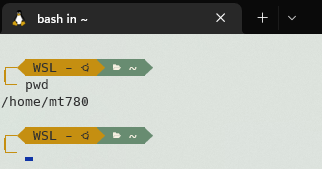
Notifies which directory you're currently on.
~$ ls
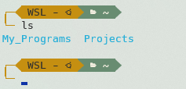
Provides a preview of the subdirectories in the current directory you're in.
~$ cd directory_name
~$ cd ..
~$ cd
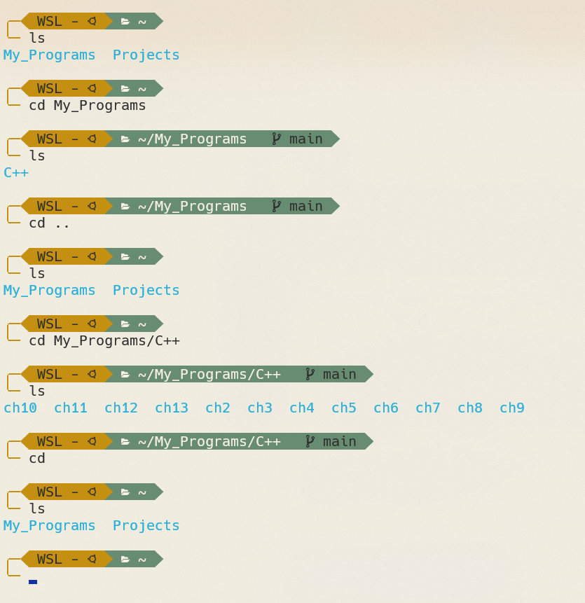
Helps navigate the directory. Can require additional
input, for instance, if you want to move into a subdirectory
then you type and enter the subdirectory's name after the cd
command. If you want to go back one directory you simply type two periods
after the cd command. Rather than using cd all the time, if you know the location of a
directory you want to visit, you can create a path by adding
forward-slashes (/) to each step. Looking at the
example, notice the path depicted
in the green section, or notice the subdirectories
when we enter the command ls.
~$ mkdir directory_name
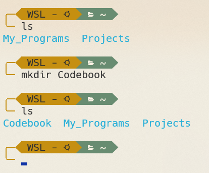
Allows you to create a subdirectory in the current directory you're in.
~$ vim file_name.cpp
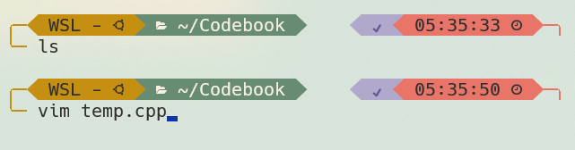
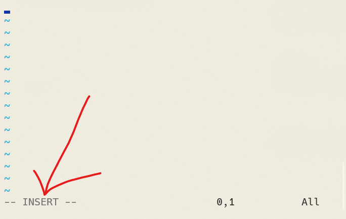
Allows you to create and access the C++ file to edit.
You need to learn additional modes and commands to edit, manipulate,
save, and more. If you start typing right away, you might
notice a letter or two missing, that's because we're not
initially in insert mode. If you're not in
insert mode shown at bottom of the window then press
the character (i) on your keyboard. To quit any of the several modes,
press the escape key. You might forget you're not in insert
mode and will try to delete characters by hitting backspace which
will cause the cursor to move to the left instead of
deleting the letters. To fix this hit the (i) key again.
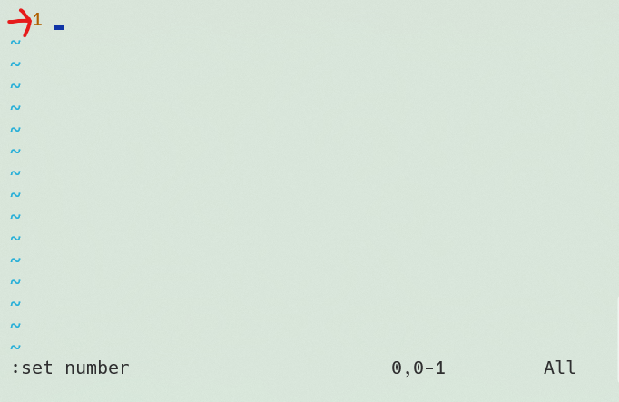 Vim comes with its own special commands that you can enter in the command line located at the bottom of the window. Before typing a command, exit out of any mode you're currently on. Once out of the modes, start your command with a colon (:). If 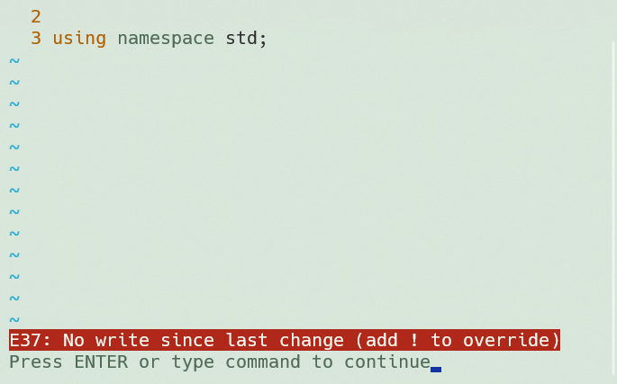 you wish to know more simply enter (:help) on the command line to get more information, though we will go over a few of the basics. If you want line numbering all you have to do is enter (:set number) in the command line, really useful. If you want to save your file all you have to do is type (:w) in the command line and press enter. If you want to quit use the following command (:q). Note, sometime you can't quit before saving, so if you want to force quit, all you have to do is enter (:q!). Warning, all progress will be loss, so the better option is to use the save and quit command (:wq).
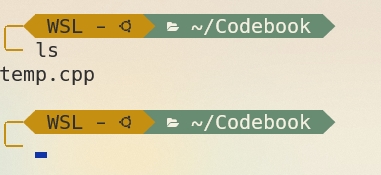 Remember, Vim is an open-source editor. It comes with some distributors of Linux like Ubuntu, but if you don't have it the terminal will complain and suggest installing it using whatever command it gives you. Once again, you can use any editor you like, but for educational purposes we will be using Vim for the time being.
~$ rmdir directory_name
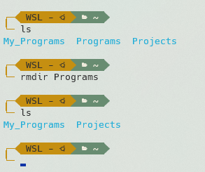
Allows you to remove a subdirectory in the current directory you're in. Warning,
only allows you to remove empty directories.
~$ rm file_name
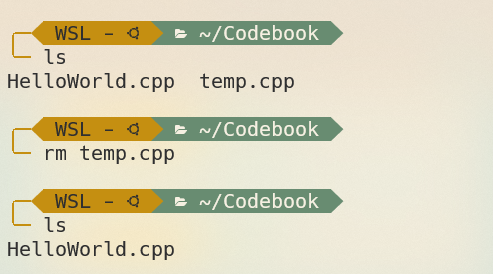
Allows you to remove files.
~$ sudo ...
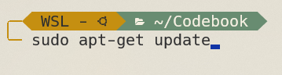
Gives you administrative access over operations. Note, it
will often ask you for the password before doing its task, so
make sure you remember the password. With this in
mind, we can move on to the next section.
To avoid any issues when installing the compiler, it's always a good idea to check for updates. To do this there are a set of instructions you should follow. First, we must update the package list by entering the following command:
~$ sudo apt-get update
The command "apt-get update" is part of APT (Advanced Package Tool) that helps manage software. In this case, we're trying to get the updates so we can then upgrade and receive the proper packages. Packages is just another way to say applications. To upgrade, type the following in the terminal:
~$ sudo apt-get upgrade
We're almost done, but we still need to make sure we upgrade critical packages while it cleans up unnecessary packages. Type the following:
~$ sudo apt-get dist-upgrade
If successful everything should be up to date and we can continue towards installing the compiler for our task.
The GNU Compiler Collection (GCC) is free software, more specifically, it's a compiler that supports multiple languages and is compatible with different types of hardware and operating systems. It has matured since its origin and has given us the GNU C++ Compiler, also known as g++, which allows us to compile both .c and .cpp files in terms of C++.
There are two methods to download the package, but for this instance we will use the build-essential route since it includes other key features like: libraries, debuggers, and the compiler itself. To do this simply, type the following:
~$ sudo apt install build-essential
Afterwards, you can check to see if you have g++ by entering:
~$ g++ --version
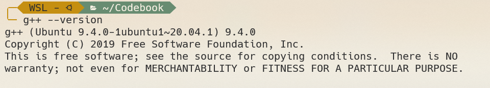
If you see something similar to the image above then you have successfully
installed the package and are ready to write your first program.
We will walk through the steps as we begin the introduction of programming. We first need to set up a personal directory to store our programs, in this case let's call it "Programs".
~$ mkdir Programs
After creating our directory, let's access it with the cd command.
~$ cd Programs
Once inside our directory we can begin creating our programming files. Use the vim command and call your file "HelloWorld.cpp".
~$ vim HelloWorld.cpp
Once the text editor opens remember to hit the (i) key to begin insert mode. Type the Hello World example from the beginning of the lecture. Once completed you can save your progress by getting out of insert mode and typing the save quick command (:wq). We can now begin the compilation process.
Like the terminal and the editor, g++ has its own unique commands. The first step is to translate our .cpp file into an object file; it's a file with the extension .o attached to it. To clarify, the object file contains machine level code which is something the system can understand. To start the process type:
~$ g++ -c file_name.cpp
~$ g++ -c HelloWorld.cpp
Once the object file is created you can see it in your directory by typing ls. Notice how it has the same name as the C++ file, this is normal. In the case where you do get an error it will most likely be a syntax error, which will identify the location of the error in the form of text. Simply go back in and edit your file. The next step is to name and create an executable file; for us the executable file has a .out extension. This file will run our program and provide output. Use the following example to create it:
~$ g++ -o executable_file_name file_name.cpp
~$ g++ -o HelloWorld HelloWorld.cpp
Typing the command ls will allow you to see the file. Notice how there is no extension with this file. Finally, to run it we use the dot-forward-slash (./) to denote the current directory with the name of the executable file attached so we can access it like so:
~$ ./executable_file_name
~$ ./HelloWorld
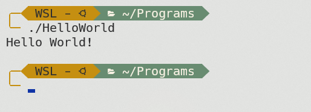
Once you hit enter you should be able to see the output below, like
the example above. Congratulations you are officially a programmer!
If you wish to continue please read into the next section.